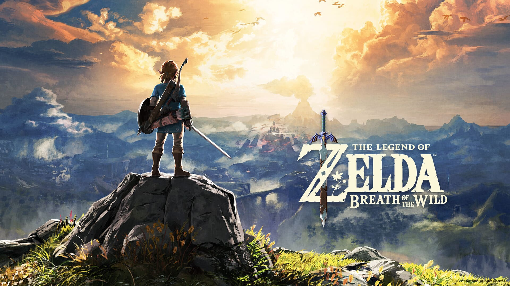
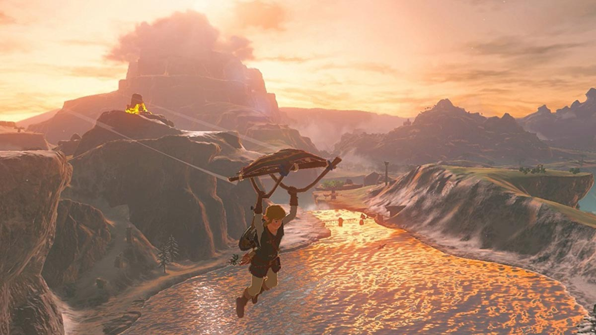
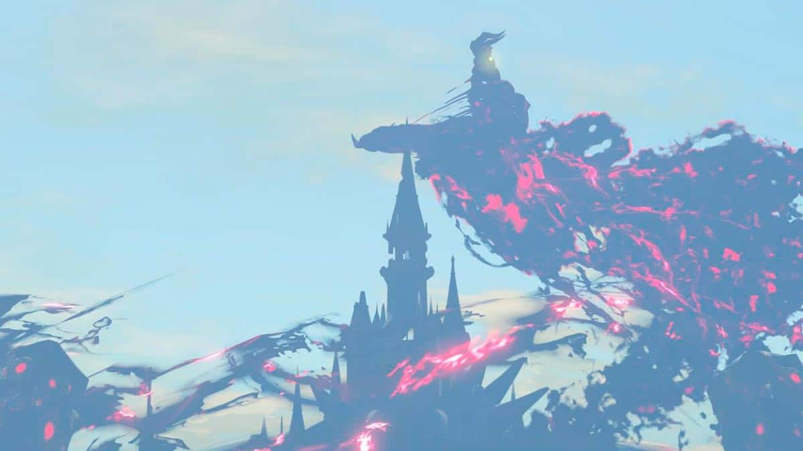

CARTA DE AMOR A BREATH OF THE WILD
El zelda que nos conquistó irremediablemente
Rendimos homenaje a «The Legend of Zelda: Breath of the Wild», una de las mejores entradas de la saga y firme candidato a mejor juego de la generación.
El autor de estas líneas ha de confesar que no le tiene miedo a la página en blanco. Eso de escribir siempre le ha gustado y, mal que bien, se ha ido defendiendo. Pero un buen día decidió que le iba a escribir una carta de amor a uno de sus juegos favoritos. Y entonces, de repente, las palabras enmudecieron y se hicieron pequeñas en las yemas de sus dedos. Porque tenía ante sí un coloso al que es prácticamente imposible hacer justicia. The Legend of Zelda: Breath of the Wild es, tres años después de su nacimiento, un hito inalcanzable. Indescriptible. Pero vamos a hacer un esfuerzo para lograr esto último.
Si The Legend of Zelda: Breath of the Wild fuera una obra arquitectónica, la traslación más idónea serían las pirámides de Giza. Majestuoso por fuera, lleno de misterios y de exploración y, ante todo, irradiante de magia por todas sus aristas. No solo eso: superadas las primeras horas de juego y una vez acostumbrados a la curva de dificultad de este título —una de las pocas pegas que se le puede achacar es dejarte inicialmente demasiado expuesto a los peligros y a la vastedad de Hyrule—, Breath of the Wild parecerá, del mismo modo que estas tres estructuras, algo construido por inteligencias superiores en lugar de por meros seres humanos.
Porque Breath of the Wild no es un juego, es una experiencia sensorial. Todo en este título está diseñado para resultar fantasioso pero al mismo tiempo extrañamente tangible. Como si el Hyrule devastado tras el Cataclismo de Ganon fuera nuestro segundo hogar, una tierra que no podemos dejar de visitar en busca de innumerables secretos. De hecho, y por naíf que pueda parecer, la simple actividad de recorrer los parajes del juego por tierra, mar y aire —bendita paravela y la sensación de libertad extrema que ofrece— es un placer inesperado e infalible.

The Legend of Zelda: Breath of the Wild: abstente si sufres de vértigo.
Nada como una partida al Breath of the Wild para alegrarnos la vista, probablemente el sentido más obvio pero no por ello menos importante. Y no por la ostentación gráfica sino por la belleza estética de sus paisajes, personajes, amaneceres y atardeceres. El Hyrule de este The Legend of Zelda es el más grande que la saga ha ofrecido jamás pero, increíblemente, en ningún momento parece falto de vida o de atención al detalle. Cada zona del juego cuenta con una ambientación propia pero nunca aislada del resto. Una buena muestra de ello es la internada en la región de los Zora, una senda que paulatina y orgánicamente se irá tornando lluviosa y húmeda con cada paso de Link. Un trabajo cercano a la artesanía que deja absorto al jugador.
Pero quizá lo más increíble de The Legend of Zelda: Breath of the Wild sea el simple hecho de mirar al horizonte. La exploración de Hyrule se convierte en una obsesión, incluso cuando transitemos por las zonas menos inspiradas del inmenso mundo a conquistar. Precisamente porque sabemos que más allá, solo unos kilómetros a pie o a lomos de nuestro caballo, seremos nuevamente testigos de un enésimo descubrimiento que no esperábamos en forma de misión secundaria, santuario por completar, enemigo que derrotar, entrañable personaje que conocer o bestia divina que domar. Las posibilidades de sorpresa parecen ilimitadas y el jugador se tornará insaciable de forma inevitable.
Breath of the Wild es lo que todos los juegos de género sandbox soñaban con ser cuando nacieron. Nintendo cogió una fórmula que se antojaba ya amortizada y la aplicó a una de sus sagas estrella convirtiéndola en algo que nunca había sido hasta entonces.
Qué decir del oído en una saga como Zelda, experta en emocionarnos y retrotraernos a la infancia gracias a sus melodías. En el caso de Breath of the Wild nos encontramos con una excepción a la norma. El silencio en Breath of the Wild es estruendoso. La banda sonora es generalmente sobria, sutil, con notas tan solitarias como el Link de esta entrega de Zelda. El piano es el protagonista y en muchas ocasiones funcionará como acompañamiento en nuestro recorrido por Hyrule, eso sí, con las notas adecuadas en cada momento.
No obstante, Breath of the Wild se reserva celosamente sus bazas sonoras más épicas para cuando sabe que es necesario. Quizá el mayor ejemplo de ello sea el apabullante tema de Hyrule Castle. No exageramos en absoluto al afirmar que la primera vez que ponemos un pie en los terrenos del castillo es una vivencia inolvidable, con la irrupción de las trompetas y los pasos de marcha militar. Se trata de una composición de una epicidad asombrosa que prepara al jugador para la inminente confrontación final. En un registro totalmente opuesto se encontraría la conmovedora melodía del Poblado Orni que, a su vez, es una reinvención del tema Dragon Roost Island de The Legend of Zelda: The Wind Waker(GameCube, 2002). Esta composición es el aderezo perfecto a la ciudad vertical de los alados y elegantes Orni. En resumen: la banda sonora de este Breath of the Wild es un verdadero regalo y un privilegio para nuestros oídos.

El castillo de Hyrule y Ganon, tan ominosos como de costumbre.
Restan tres sentidos. El tacto es esencial para trepar acantilados y en lo más alto de los mismos descubrir, cómo no, nuevos límites. La escalada es, junto con el planeo, el elemento más determinante y distintivo en Breath of the Wild. El premio es, ni más ni menos, vislumbrar una nueva porción de terreno por explorar. ¿Qué mayor aliciente que asomarnos constantemente a la aventura y al hallazgo de secretos? En cuanto al olfato y al gusto son, por supuesto, necesarios para la elaboración de recetas. Una tarea que, lejos de resultar tediosa o insulsa, dota al juego de un componente estratégico inesperado. Habrá jefes finales —sobre todo en el modo heroico— que requerirán de cierta preparación previa en forma de platos que potencien nuestro ataque, defensa o resistencia contra, por ejemplo, las descargas eléctricas. De no hacerlo, sucumbiremos estrepitosamente.
En resumen, Breath of the Wild es lo que todos los juegos de género sandbox —o de mundo abierto— soñaban con ser cuando nacieron. Nintendo cogió una fórmula que se antojaba ya amortizada y no solo consiguió revitalizarla sino que, sin ningún atisbo de temblor de piernas, decidió aplicarla a una de sus sagas estrella convirtiéndola en algo que nunca había sido hasta entonces y que ahora nos cuesta imaginar de otro modo. Lo que podría haberse quedado en un farol se convirtió en órdago y, por último, en victoria sin paliativos.
El autor de estas líneas no querría dar por concluida esta carta de amor sin rememorar, con especial cariño, una de las aventuras más apasionantes vividas en The Legend of Zelda: Breath of the Wild. Dicha hazaña tuvo lugar durante una exploración por las encrespadas costas al noreste de Akkala. Allí, en mitad del océano, emergía una monolítica construcción de altos muros e imponente presencia. Link, confiado en llegar hasta ella a pesar de la tormenta que empezaba a arreciar, cogió carrerilla y desplegó su paravela en dirección a la extraña edificación.
La isla Lomei esconde uno de los momentos más memorables de Breath of the Wild.
Durante el vuelo, los vientos no estaban dispuestos a favorecer el planeo del Héroe. La lluvia empezó a caer con fuerza desequilibrando la trayectoria del vuelo. Link, con la bruma disipándose poco a poco, advirtió que se dirigía a un inmenso laberinto. Las luces rojas que tintineaban a lo lejos terminaron de alertarle: Guardianes. Tendría suerte si a pesar de poner un pie en el islote no acababa carbonizado por culpa de alguna de esas malditas máquinas. Las fuerzas comenzaban a flaquear pero ya quedaba menos. Link estaba muy, muy cerca de alcanzar los fríos muros de la fortificación. En un último esfuerzo, consiguió virar con la paravela y dar esquinazo a uno de los guardianes. Parecía imposible, pero lo había logrado. El laberinto, pétreo y hostil, se mostraba ante el Héroe.
A lo lejos, resplandeciendo a duras penas a través de la espesa niebla que inundaba el lugar, se encontraba la inconfundible luz naranja que emanan los santuarios. Tras una larga y penosa travesía, Link llegó hasta el vestíbulo central y, haciendo uso de la piedra sheikah, accedió al templo de Kahoi. Dentro, en lo que al Héroe le pareció una especie de disculpa divina después de superar la dura prueba del laberinto, no se encontraba un reto difícil sino un premio en forma de cofre y de un símbolo de valía. A la salida, el Héroe sintió que algo había cambiado de repente en la entrada del santuario. Una corriente de aire bajo sus pies le hizo bajar la vista para encontrar una abertura que había aparecido de repente. Un mal presentimiento cruzó su mente pero sus ganas de explorar fueron más fuertes. Con ayuda de su inestimable paravela, descendió por el angosto pasadizo durante unos interminables segundos y sin imaginar qué le esperaría al final del abismo.
Link aterrizó. La oscuridad lo inundaba todo a su alrededor. Entrecerró los ojos para que la vista se acostumbrara a la penumbra. Finalmente, una gigantesca sala se reveló ante él. Entonces sucedió algo que heló su sangre: no estaba solo. A su alrededor yacían un número indeterminado de Guardianes. Sus cuerpos oxidados y sus retorcidas y enmarañadas patas dibujaban un paisaje aterrador. Se encontraba en un cementerio de Guardianes. El mal augurio del Héroe aumentaba por momentos. Un escalofrío recorrió su espalda mientras caminaba entre los inertes monstruos que antaño defendieron el Reino de Hyrule. De pronto, un chirrido metálico rompió la mortuoria paz de la habitación. Un Guardián despertaba de su letargo y apuntaba amenazante con su láser rojo. Escapar era la única opción. Y cuanto antes.
Link esquivó por los pelos el primer disparo del Guardián, el cual impactó en una pared iluminando de un rojo intenso la estancia. Alertados por el ruido, el resto de arañas mecánicas comenzaron también a erguirse. Ya no era un solo láser el que le apuntaba. Un entramado de hilos rojos invadía la sala. Los rayos rebotaban en las paredes y cegaban a Link. La corriente de aire ascendente debajo del conducto era la única posibilidad de salvación. Las fuerzas comenzaban a flaquear pero, en el último instante, consiguió desplegar la paravela. Los pies se despegaron del suelo. Los Guardianes dispararon sus armas al unísono, fallando el cálculo gracias al providencial ascenso del Héroe. Se elevó hacia el exterior. Por fin fuera, en el laberinto, la tormenta se había disipado. Una bandada de gaviotas surcó los cielos. Linkmiró hacia arriba y sonrió. Hyrule seguía allí y aún quedaba mucho por descubrir.
The Legend of Zelda: Breath of the Wild es una estrella fugaz. Una alineación planetaria. Un eclipse total. Pasará muchísimo tiempo antes de que volvamos a tener ante nosotros un juego de esta magnitud. Terminar The Legend of Zelda: Breath of the Wild provoca una extraña sensación de desazón. Como de haber sido testigos de una maravilla que puede que tarde muchos años, quién sabe si lustros, en volver a acontecer. Solo el viento tiene la respuesta.

Texto de Alber Romero